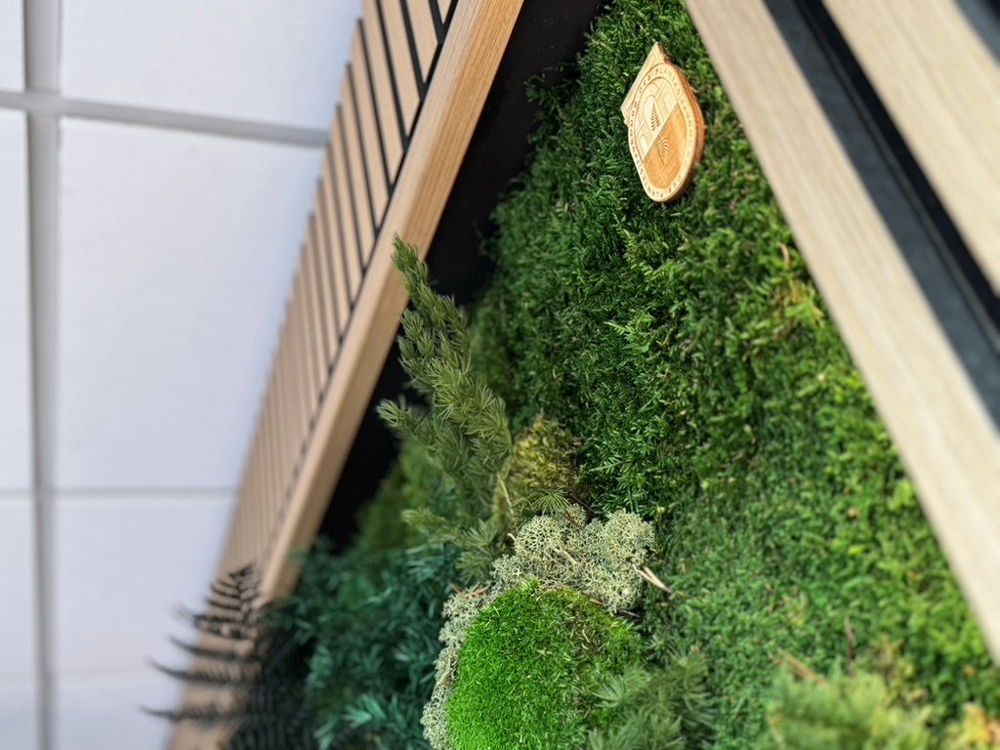
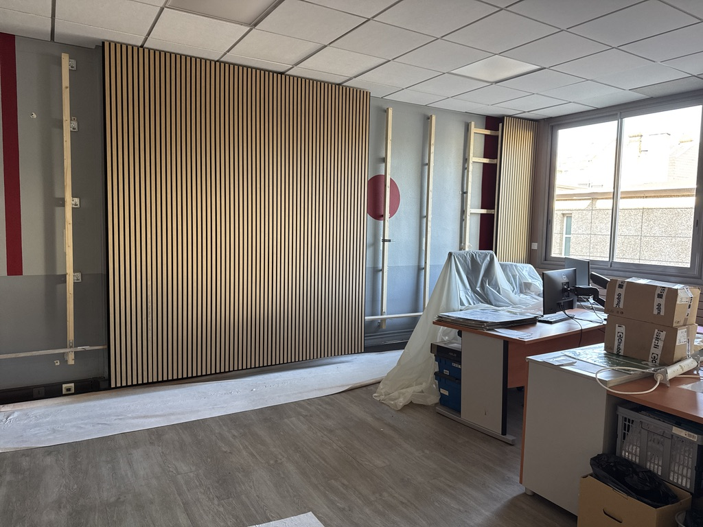
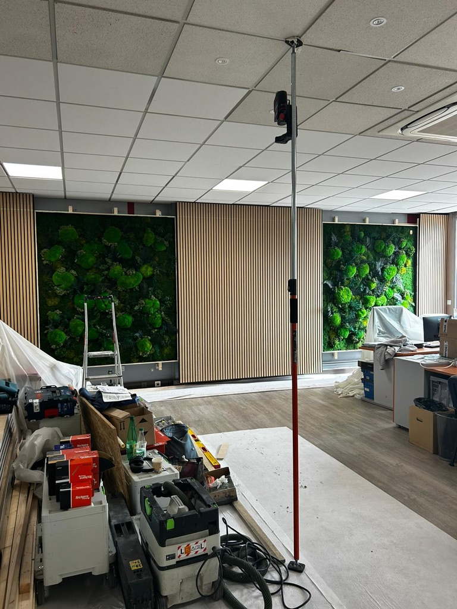
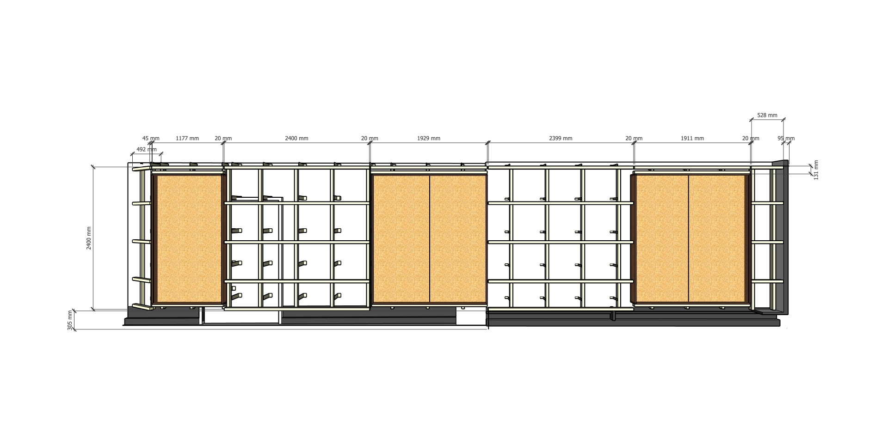
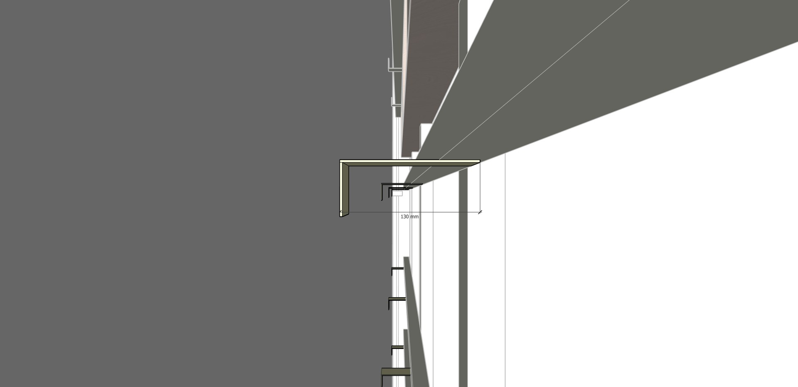
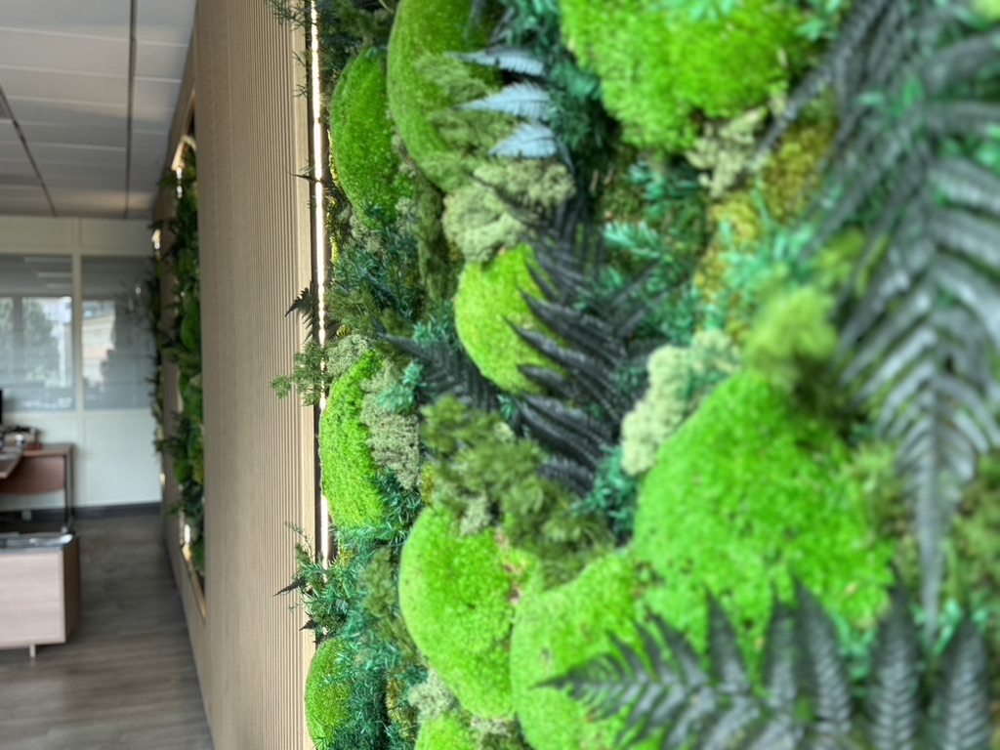
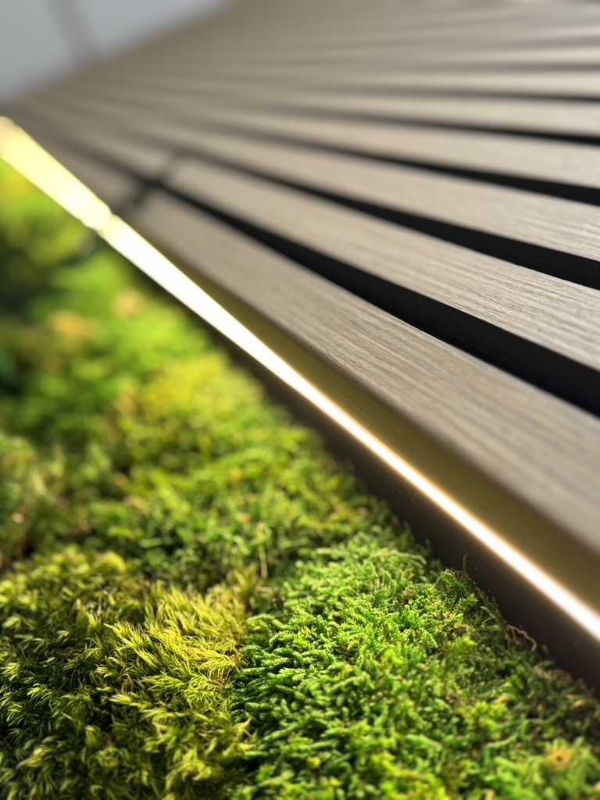

Pour ce projet, la demande du client concernait un lieu professionnel : un open space destiné à accueillir des réunions, des temps d'échange et des moments de travail collectif.
L'objectif était d'habiller un grand mur afin de transformer l'esthétique de la pièce et d'apporter une présence végétale forte. Mais derrière cette demande se cachaient plusieurs contraintes techniques importantes : une porte existante, des différences d'épaisseurs, un mur qui n'était pas d'aplomb, des radiateurs, ainsi que différents passages techniques liés à l'eau, au chauffage et à l'électricité. Il fallait donc imaginer une solution à la fois esthétique, précise, sécurisée et parfaitement adaptée au lieu.
Une collaboration entre Atelier EGEA et Faubourg des Plantes
Comme sur d'autres projets mêlant bois, agencement et végétal, Atelier EGEA a travaillé en collaboration avec Faubourg des Plantes, spécialiste des murs végétaux haut de gamme.
L'idée retenue a été de créer trois grands cadres végétaux d'environ 1,90 m par 2,40 m, venant structurer le mur et redonner une identité forte à l'espace. Ces tableaux devaient s'intégrer dans un ensemble mural complet, pensé comme une composition globale : structure bois, habillage acoustique, lattage décoratif, cadres végétaux, rétroéclairage et accès techniques.
Le végétal ne venait donc pas simplement en décoration. Il dialogue avec l'agencement, les matières, les lignes du mur et l'usage professionnel du lieu.

Un mur complexe à reprendre et à aligner
L'une des principales difficultés du chantier résidait dans l'état du mur existant. Les aplombs étaient irréguliers, les profondeurs variables et plusieurs éléments techniques devaient être contournés ou rendus accessibles.
Avant de penser à la finition, il a fallu concevoir une structure capable de reprendre les défauts du support : aligner l'ensemble, échapper aux radiateurs, gérer les différences de profondeur et conserver les accès aux passages d'eau, de chauffage et d'électricité.
Les cadres végétaux reposent sur un système de lattage en tasseaux bois, fixé sur des équerres de bardage dans un principe proche d'une ossature de bardage intérieur. Les équerres ont été installées avec des chevilles spécifiques, adaptées aux contraintes du support existant — une étape essentielle pour garantir la stabilité et la durabilité de l'ensemble.
Ce chantier s'est déroulé dans un environnement professionnel occupé : les personnes continuaient à travailler dans l'open space pendant certaines phases d'intervention. Le lieu appartenait à des spécialistes de la maîtrise d'œuvre, habitués aux questions techniques et à la précision. Autant dire que nous n'avions pas le droit à l'erreur.


De la conception à la fabrication : une précision au millimètre
La première étape a consisté à visiter le lieu avec le client et Faubourg des Plantes, afin de constater les contraintes, d'étudier les faisabilités et de comprendre les attentes esthétiques et techniques. Une prise de cotes complète a ensuite été réalisée, accompagnée d'un scan de la pièce avec iMapper. Ce relevé a permis d'anticiper les défauts de relief et de mieux comprendre le volume réel avant de concevoir.
Après cette phase d'étude, Atelier EGEA a réalisé la modélisation complète du projet. Cette étape permet de visualiser le résultat final, mais aussi de vérifier les détails techniques : alignements, réservations, épaisseurs, emplacements des cadres, zones d'accès et calepinage du lattage. Le mur mesurait environ 12 mètres de long pour 2,70 mètres de haut — anticiper l'ensemble au millimètre près était une nécessité absolue.


Un habillage mural acoustique et décoratif
Le client souhaitait un habillage composé de panneaux en feutre acoustique, associés à un lattage en Valchromat replaqué avec un placage chêne clair vernis. Les panneaux répondaient à plusieurs exigences techniques importantes pour un lieu professionnel : classement feu BFL-S1 D0, affaiblissement acoustique et faibles émissions de formaldéhyde en classement E1.
Le feutre acoustique améliore le confort sonore de l'open space, tandis que le lattage en placage chêne clair apporte chaleur, rythme et élégance à l'ensemble du mur. Le lattage devait être parfaitement respecté car les cadres végétaux venaient s'y insérer en finition — un calepinage précis, pensé en amont, pour que chaque ligne et chaque raccord trouve sa place.

L'installation des tableaux végétaux rétroéclairés
Une fois le mur finalisé, les cadres végétaux ont pu être installés. Pour cette étape, Atelier EGEA et Faubourg des Plantes ont fait appel à un collaborateur spécialisé dans la logistique de chantier — les tableaux étaient grands, sensibles et installés dans un espace encore occupé. Les trois cadres ont été mis en place sans difficulté. Leur présence a immédiatement transformé l'atmosphère du lieu.
Les cadres végétaux sont entièrement rétroéclairés grâce à un système de LED intégré. Cet éclairage met en valeur les compositions végétales, donne de la profondeur au mur et crée une ambiance lumineuse douce dans l'open space.

Ce rétroéclairage transforme les cadres en véritables tableaux lumineux. Le végétal devient un élément vivant, mais aussi une source d'ambiance, capable d'accompagner les réunions, les temps de travail et les moments d'échange.
Une fois les cadres installés, les dernières finitions ont été réalisées autour des passages techniques. L'enjeu était de rendre ces éléments accessibles sans nuire à l'esthétique générale — c'est souvent dans ce détail que se joue la qualité finale d'un projet.
Un projet au service du bien-être des occupants
Ce chantier s'est déroulé dans de très bonnes conditions grâce à l'ensemble des équipes impliquées : Atelier EGEA, Faubourg des Plantes, les collaborateurs de pose et de logistique, ainsi que le client. Nous avons été accueillis avec beaucoup de générosité : café, thé, facilités d'accès et mots de reconnaissance à la réception du chantier. Ces attentions comptent énormément dans le bon déroulement d'un projet.
Aujourd'hui, ce mur végétal sur mesure accompagne le quotidien des occupants et contribue au bien-être dans leur lieu de travail.